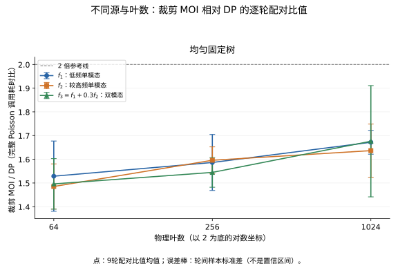

求解横向周期、两壁零 Dirichlet 的 Poisson 问题：
\[
\boxed{
\Delta u=f\quad\text{于 }D=(0,1)\times(0,1),\qquad
u(x+1,z)=u(x,z),\qquad
u(x,0)=u(x,1)=0.
}
\]
令 \(\Omega=[0,2)^2\)。将 \(f\) 延拓为
\[
F(x,z)=
\begin{cases}
f(x,z),&(x,z)\in Q_0,\\
f(x-1,z),&(x,z)\in Q_1,\\
-f(x,2-z),&(x,z)\in Q_2,\\
-f(x-1,2-z),&(x,z)\in Q_3,
\end{cases}
\]
其中 \(Q_0,Q_1,Q_2,Q_3\) 分别是左下、右下、左上、右上四个单位正方形。
这个延拓满足
\[
F(x+1,z)=F(x,z),\qquad F(x,2-z)=-F(x,z),
\qquad \int_\Omega F=0.
\]
因此可以解零均值周期问题
\[
\boxed{
\Delta U=F\quad\text{于 }\Omega,\qquad
U\text{ 在两个方向周期 }2,\qquad
\int_\Omega U=0.
}
\]
由反射对称性和零均值周期解的唯一性，
\[
U(x,2-z)=-U(x,z).
\]
于是
\[
U(x,1)=0,\qquad U(x,0)=-U(x,2)=-U(x,0)=0.
\]
同理，\(U(x+1,z)=U(x,z)\)。所以
\[
\boxed{u=U|_D.}
\]
定义边长 2 的周期 Green 函数：
\[
\boxed{
G_\Omega(x,z)=
-\frac1{4\pi^2}
\sum_{\substack{m,n\in\mathbb Z\\(m,n)\ne(0,0)}}
\frac{e^{i\pi(mx+nz)}}{m^2+n^2}.
}
\]
记 \(r=(x,z)\)，\(\delta_{\rm per}\) 为周期格点 \(2\mathbb Z^2\) 上的 Dirac 点质量之和，则
\[
\Delta G_\Omega(r)=\delta_{\rm per}(r)-\frac14,
\qquad \int_\Omega G_\Omega=0.
\]
令 \(y\in\Omega\) 为源点，周期解为
\[
U(r)=\int_\Omega G_\Omega(r-y)F(y)\,dy.
\]
定义实际使用的源多项式和分片源为
\[
F_C(y)=\sum_{j,k\ge0,\ j+k\le7}a_{jk}^C T_j(\xi_C(y))T_k(\eta_C(y)),
\qquad
F_h(y)=F_C(y)\quad(y\in C),
\]
我们希望计算的势就是
\[
\boxed{
U_h(r)=\int_\Omega G_\Omega(r-y)F_h(y)\,dy.
}
\]
\(U_h\) 满足 \(\Delta U_h=F_h\)，\(\int_\Omega U_h=0\)。
自由空间核为
\[
G_0(r)=\frac{\log|r|}{2\pi},\qquad \Delta G_0=\delta_0,
\]
原先我们有的 FMM 算法是用 \(G_0\) 这个自由空间核计算近场的 FMM，对于远场我们希望使用 \(G_\Omega\) 这个周期核。于是我们考虑完整的周期势减去已经计算的近场部分，定义：
\[
\boxed{
V_{\rm far}^B(w)=\int_\Omega G_\Omega(w-y)F_h(y)\,dy
-\sum_{C\in\mathcal N(B)}\int_CG_0(w-y)F_C(y)\,dy
}
\]
即
\[
\boxed{
U_h(w)=V_{\rm far}^B(w)
+\sum_{C\in\mathcal N(B)}\int_CG_0(w-y)F_C(y)\,dy
}
\]
记 \(F_h^{\rm per}\) 为 \(F_h\) 的周期延拓，\(\mathbf1_C\) 为盒 \(C\) 的示性函数。完整周期势 \(U_h\) 满足：
\[
\Delta U_h(w)
=
F_h^{\mathrm{per}}(w)
-\frac1{|\Omega|}\int_\Omega F_h(y)\,dy.
\]
另一方面，近场势满足
\[
\Delta_w
\left[
\sum_{C\in\mathcal N(B)}
\int_CG_0(w-y)F_C(y)\,dy
\right]
=
\sum_{C\in\mathcal N(B)}
\mathbf1_C(w)F_C(w).
\]
两式相减：
\[
\Delta V_{\mathrm{far}}^B(w)
=
F_h^{\mathrm{per}}(w)
-\frac1{|\Omega|}\int_\Omega F_h\,dy
-\sum_{C\in\mathcal N(B)}\mathbf1_C(w)F_C(w).
\]
在目标盒附近，
\[
F_h^{\mathrm{per}}(w)
=
\sum_{C\in\mathcal N(B)}\mathbf1_C(w)F_C(w).
\]
以及
\[
\int_\Omega F_h\,dy=0.
\]
于是
\[
\boxed{\Delta V_{\mathrm{far}}^B=0
\quad\text{在目标盒附近}.}
\]
在二维，将目标点写成复数 \(w=x+iz\)，盒中心记为 \(c_B\)，调和函数在中心附近可以表示为解析函数的实部：
\[
V_{\rm far}^B(w)=\operatorname{Re}\sum_{n=0}^{\infty}L_n^B(w-c_B)^n.
\]
截断到阶数 \(p\)，就得到
\[
\boxed{
U_h(w)\approx
\operatorname{Re}\sum_{n=0}^{p}L_n^B(w-c_B)^n
+
\sum_{C\in\mathcal N(B)}
\int_CG_0(w-y)F_C(y)\,dy.
}
\]
系数 \(L_n^B\) 的计算正是原周期 FMM 已经具备的功能。具体而言，令物理目标叶盒集合为 \(\mathcal L_D\)，这些叶盒及其祖先组成 \(\mathcal T_D\)。原 FMM 对 \(\mathcal T_\Omega\) 中的全部目标盒形成局部展开，再对 \(\mathcal L_\Omega\) 中的全部目标叶盒计算近场积分和节点值。
由于我们只需要物理域 \(D\) 内的目标，将这两个目标计算范围改为
\[
\boxed{
\mathcal T_\Omega\longrightarrow\mathcal T_D,
\qquad
\mathcal L_\Omega\longrightarrow\mathcal L_D.
}
\]
源端仍保留整个 \(2\times2\) 扩展域：全部镜像源的展开、上行和周期作用不变。对保留的目标盒，其远场列表 \(\mathcal I(B)\) 和近场列表 \(\mathcal N(B)\) 仍来自完整扩展源树，包括相应的周期位移源盒。
根盒的局部展开由全部源上行后的周期转换初始化。对非根盒 \(B\in\mathcal T_D\)，仍使用原递推式（\(0\le n\le p\)）：
\[
L_n^B
=
L_n^{B\leftarrow\operatorname{parent}(B)}
+
\sum_{C\in\mathcal I(B)}L_n^{B\leftarrow C}.
\]
其中第一项是父盒局部展开平移到盒中心 \(c_B\) 后的系数，第二项是原交互划分中分配给 \(B\) 的远场贡献。
对物理目标叶盒 \(B\in\mathcal L_D\)，在其 Chebyshev 节点集合 \(X_B\) 上计算近似解：
\[
\boxed{
u_h(w)=
\operatorname{Re}\sum_{n=0}^{p}L_n^B(w-c_B)^n
+
\sum_{C\in\mathcal N(B)}
\int_CG_0(w-y)F_C(y)\,dA_y,
\qquad w\in X_B.
}
\]
因此，裁剪省去外部目标不再需要的局部展开接收与下行、近场积分和节点求值。物理目标及其祖先的计算依赖全部保留，外部目标输出不参与源上行，所以保留目标的源贡献、交互划分和求值公式不变。
省去的计算：
- 对 \(B\in\mathcal T_\Omega\setminus\mathcal T_D\)，跳过其不再需要的远场接收和下行计算；
- 对 \(B\in\mathcal L_\Omega\setminus\mathcal L_D\)，不再计算
[
\left{
\operatorname{Re}\sum_{n=0}^{p}L_n^B(w-c_B)^n
\right}{w\in X_B},
\qquad
\left{
\sum
\int_CG_0(w-y)F_C(y)\,dA_y
\right}_{w\in X_B}.
]
数值实验。
以下均使用每叶 \(8\times8\) 个第一类 Chebyshev 根节点和 iprec=4。令 \(X_D=\bigcup_{B\in\mathcal L_D}X_B\)，\(u\) 为解析解，\(u_h^{(m)}\) 为模式 \(m\) 的节点解，定义
\[
E_m=\frac{\max_{w\in X_D}|u_h^{(m)}(w)-u(w)|}
{\max_{w\in X_D}|u(w)|},\qquad
E_{\rm diff}=\frac{\max_{w\in X_D}|u_h^{(\rm clip)}(w)-u_h^{(\rm old)}(w)|}
{\max_{w\in X_D}|u(w)|}.
\]
其中 old、clip 分别表示原 MOI、裁剪 MOI。性能比较选择三个源：
\[
f_1=\sin(2\pi x)\sin(2\pi z),\qquad
f_2=\sin(6\pi x)\sin(4\pi z),\qquad
f_3=f_1+0.3f_2.
\]
其解析解为
\[
\Delta^{-1}f_1=-\frac{f_1}{8\pi^2},\qquad
\Delta^{-1}f_2=-\frac{f_2}{52\pi^2},\qquad
\Delta^{-1}f_3=-\frac{f_1}{8\pi^2}-\frac{0.3f_2}{52\pi^2}.
\]
这三个解析解既满足两壁零值，又在 \(x,z\) 方向周期 1 且均值为零。
本批取 64、256、1024 个物理叶的三棵均匀固定树，每树三个源，共 9 个配置。
| 物理叶数 |
原 MOI / ms |
裁剪 MOI / ms |
DP / ms |
相对原 MOI 的配对节省 |
| 64 |
10.97 |
4.79 |
3.20 |
56.4% |
| 256 |
42.04 |
17.26 |
11.19 |
58.9% |
| 1024 |
148.98 |
60.30 |
36.51 |
59.3% |
三种模式的节点误差在相同源、相同树上基本相同。汇总先对每模式的 18 个计时块取 \(E_m\) 最大值；下表除 1024 叶 \(f_1\) 一格保留三模式范围外，其余各格列三模式最大值：
| 物理叶数 |
\(f_1\) |
\(f_2\) |
\(f_3\) |
| 64 |
\(2.20\times10^{-10}\) |
\(9.03\times10^{-7}\) |
\(4.16\times10^{-8}\) |
| 256 |
\(7.46\times10^{-13}\) |
\(1.55\times10^{-9}\) |
\(7.18\times10^{-11}\) |
| 1024 |
\((0.8\text{–}2.3)\times10^{-14}\) |
\(4.68\times10^{-12}\) |
\(2.20\times10^{-13}\) |

Fig. 1MOI/DP 耗时比
完
评论